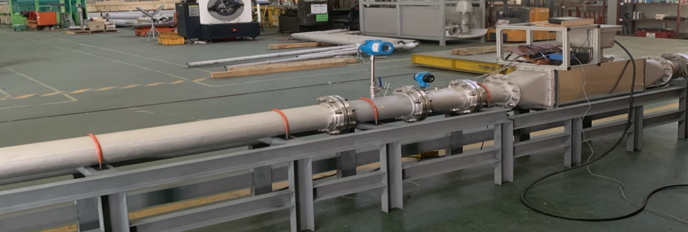
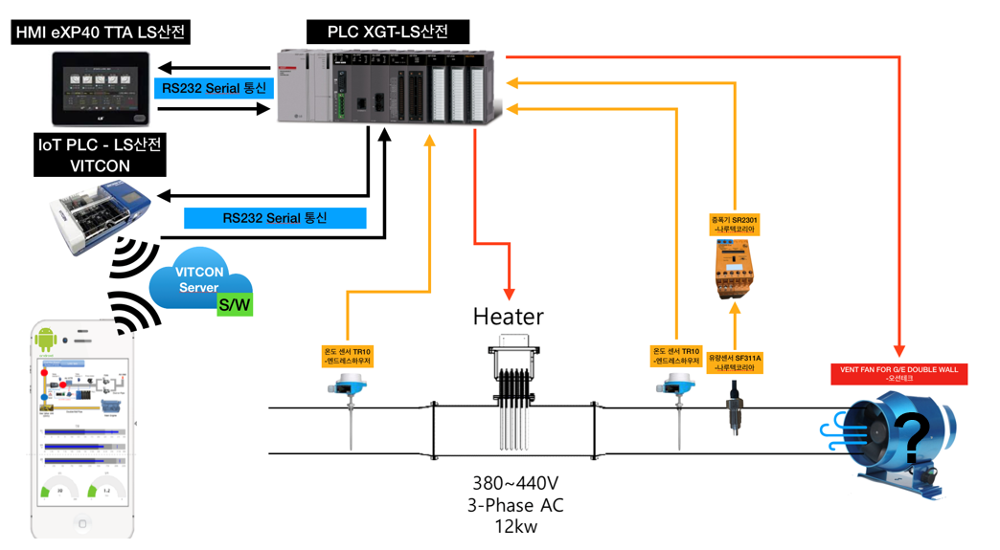

신호 수집과 출력 제어
압력센서, 열전대, 로드셀의 신호 수집 회로와 DO·릴레이 제어 회로를 구성했습니다.
PROJECT 04 / INDUSTRIAL / MEASUREMENT & CONTROL
센서, PLC, 통신, HMI를 통합해 현장 제어와 IoT 기반 원격 모니터링을 구현했습니다.
01 / CONTEXT
LNG 연료공급 시스템의 상태를 계측하고 현장과 원격에서 모니터링·제어할 수 있도록 센서와 제어 장치를 통합하는 연구에 참여했습니다.
02 / APPROACH
압력센서, 열전대, 로드셀의 신호 수집 회로와 DO·릴레이 제어 회로를 구성했습니다.
센서를 보정하고 XG5000에서 XGT 계열 PLC 프로그램을 개발했습니다.
PLC와 Vitcon IoT 모듈 사이의 통신, RS232·RS485 연결, eXP-40/TTA HMI를 활용한 모니터링·제어 인터페이스를 구성했습니다.
03 / VERIFICATION
센서, PLC, 통신, HMI를 통합해 현장 제어와 IoT 기반 원격 모니터링·제어가 가능한 시스템을 구성했습니다.
04 / SCOPE
직접 수행한 범위는 계측·제어 시스템 구성과 PLC 프로그램 개발입니다. 선박 탑재나 상용화 성과를 의미하지 않습니다.
PROJECT MATERIALS
제작 구성과 실제 결과를
프로젝트 자료로 살펴봅니다.

LNG 연료공급 연구의 시험 장치. 센서 신호 수집, PLC 프로그래밍, 통신과 HMI 통합에 참여했습니다.
제공 포트폴리오 11쪽 수록 자료
PLC, HMI와 IoT 모듈을 연결한 연구 시스템 구성도. 도식에 표현된 전체 장비의 단독 개발을 의미하지 않습니다.
제공 포트폴리오 10쪽 수록 자료